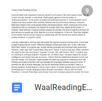

Mini-Assignment3: Refelction Yuanrui Chen
- Sep 2018
-
Sep 25De Waal Reading Journal
Frans de Waal’s main argument is that we shouldn’t put human onin the most superior level...
click here to view my reading journal
What I Learned From Tickling Apes Tickling a juvenile chimpanzee is a lot like tickling a child. The ape has the same sensitive spots:under the armpits... click here to view the original text -
Sep 24Reading of Shakespeare in the Bush
 Just before I left Oxford for the Tiv in West Africa, conversation turned to the season at Stratford. "You Americans," said a friend...
Just before I left Oxford for the Tiv in West Africa, conversation turned to the season at Stratford. "You Americans," said a friend...
click here to view the original text -
Sep 24Choosing primary essayI choose de Waal's essay as my primary essay, and try to give more details about de Waal's idea and the connection to my idea.
click here to view my work -
Sep 26Analyzing Shakespeare in the BushThis time, I try to represent the idea of the essay and come up with a new question accroding to this essay.
click here to view my work -
Sep 30Draft 1This is the first time I try to make a connection bewteen de Waal's essay and Bohanna's essay. In the first draft, shaping the idea is the most important work, so I just put whatever I think into the draft. The connection I choose between this two essay is that both authors talk about the mind. However, at that time, I ignore a very important thing...
click here to view my work - Oct 2018
-
Oct 1Peer review & Draft2In the class, my friend helps me correct some grammar mistake and give me some suggestions such as giving more evidence
click here to see the peer review
In Draft2:
1. I add a beginning of the essay
2. I begin to think about the transition between paragraph
3. I try to make my idea clearer
click here to view my workOct 3Group Workshop
In fact, the group workshop helps me the most in my process of writing the essay. In the class, we share three students' essay, and by seeing other students' work, I realize some big mistakes that I made in the draft.
Main Idea One of the most important mistake is that I don't have a clear main idea! What I do is simply represent de Waal's and Bohanna's idea instead of thinking a new problem by my own. Therefore, I need to come up with a main idea for my essay.
Quote One student's essay include too many quotes and it was at that time I realize that instead of having too many quotes, I don't have enough qutoes to support my idea.Oct 10Conference with teacher In the conference, I realize a new problem in my draft: The beginning of my essay mainly talk about de Waal's idea, so it is more like a paragraph discusing de Waal's idea other than introducing my topic. Moreover, after the conference, I decide to change my primary essay from "What I Learned From Tickling Apes" to "Shakespeare in the Bush". This is because the Bohanna only talks about human mind, but in "What I Learned From Tickling Apes", de Waal moves to a bigger topic including both human and other animals.Oct 17Final essay!!!After almost a month, I finally finished my essay. In fact, this is the first time I take such a long time to write an essay and I really learn a lot from the process of writing this essay. One of the most important thing I learn is that writing the essay steps by steps is really important, such as deeply analyzing the primary essay, brainstorming, and discussing with peers and teahcer. It is because of all these work that I can finish my essay, and it is also why I make this timeline to show all the work that lead to my final essay.
In the conference, I realize a new problem in my draft: The beginning of my essay mainly talk about de Waal's idea, so it is more like a paragraph discusing de Waal's idea other than introducing my topic. Moreover, after the conference, I decide to change my primary essay from "What I Learned From Tickling Apes" to "Shakespeare in the Bush". This is because the Bohanna only talks about human mind, but in "What I Learned From Tickling Apes", de Waal moves to a bigger topic including both human and other animals.Oct 17Final essay!!!After almost a month, I finally finished my essay. In fact, this is the first time I take such a long time to write an essay and I really learn a lot from the process of writing this essay. One of the most important thing I learn is that writing the essay steps by steps is really important, such as deeply analyzing the primary essay, brainstorming, and discussing with peers and teahcer. It is because of all these work that I can finish my essay, and it is also why I make this timeline to show all the work that lead to my final essay.
click here to view my final essay!!!